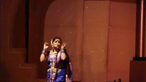
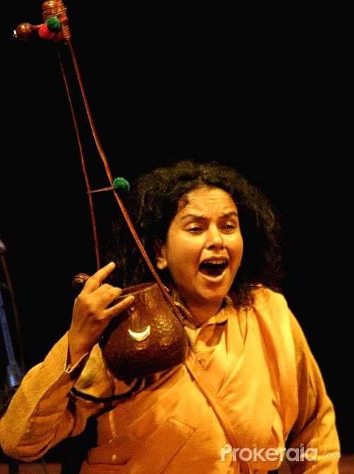
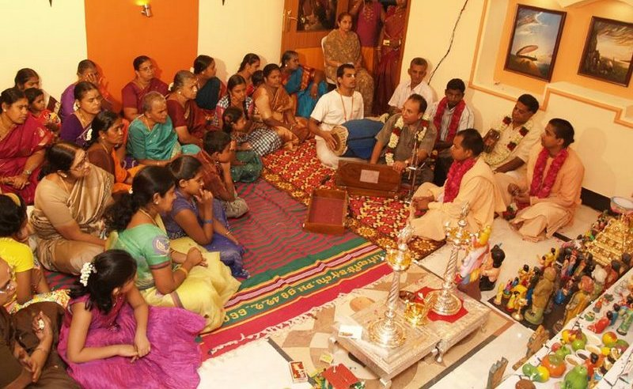

|  |
FOLK MUSICLavani and Povada are the most popular folk songs that entertain the village-folks in Maharashtra. Bhaleri, a folk-song is sung to cheer the farmers working in the field. They also sing special songs during the harvesting time. |

|
NATYA SANGEETNatya Sangeet is very popular in Maharashtra. It is sort of stage music that performs on the stage. It derives from the classical form of Indian music and presented on the semi-classical style. |
|  |
BAUL IN MAHARASHTRAThe Baul or Bauls are a group of mystic minstrels from the historical Bengal region. Bauls constitute both a syncretic religious sect and a musical tradition. Bauls are a very heterogeneous group, with many sects, but their membership mainly consists of Vaishnava Hindus and Sufi Muslims. They can often be identified by their distinctive clothes and musical instruments. Lalon Shah is regarded as the most celebrated Baul saint in history. |
|  |
BHAJANThe term 'bhajan' is also commonly used to refer a group event, with one or more lead singers, accompanied with music, and sometimes dancing. Minimally there is a percussion accompaniment such as tabla, a dholak or tamborine. Handheld small cymbals (kartals) are commonly used to maintain the beat, rhythm. A bhajan may be sung in a temple, in a home, under a tree in the open, near a river bank or a place of historic significance. |